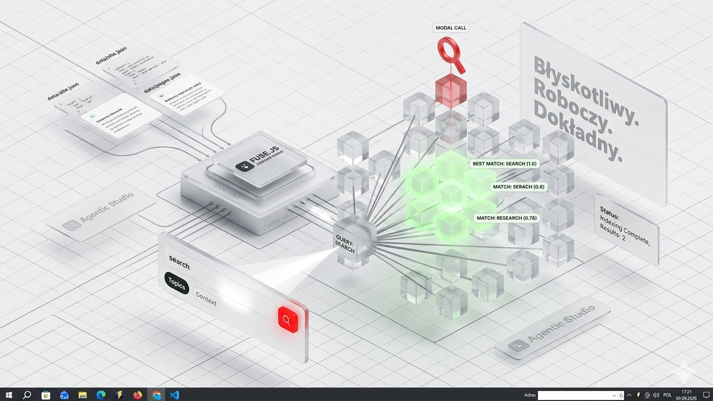

1. Indeks w danych
Dodajemy `data/search-index.json` z polami: `title`, `slug`, `href`, `topics`, `description`, `content` i opcjonalnym `section`.
Ta podstrona porządkuje pomysł z briefu: najpierw lekki modal do szybkiego szukania, potem indeks JSON dla tematów i treści, a dopiero dla długich wyników osobny widok rezultatów.
Ilustracja pokazuje wyszukiwanie jako lokalny indeks: query, scoring dopasowań, modal call i wynik, który można później rozwinąć na osobnej stronie rezultatów.

Fuse najlepiej potraktować jako lokalny silnik nad osobnym indeksem danych, nie jako logikę czytającą losowo HTML. To da stabilne wyniki, testy i kontrolę nad snippetami.
Modal pokazuje pierwsze trafienia, ich slug, temat i krótki opis dopasowania.
Po przełączeniu trybu context lista pokazuje do pięciu najlepszych fragmentów treści.
Dodajemy `data/search-index.json` z polami: `title`, `slug`, `href`, `topics`, `description`, `content` i opcjonalnym `section`.
Modal jest dobry dla inputu, czyszczenia, filtrów topics/context i pierwszych 5 wyników. Nie powinien być jedynym miejscem dla długich rezultatów.
`search-result.html?q=...` jest już przygotowane jako linkowalny widok wyników oparty o `data/search-index.json`.
Kierunek jest trafny, ale trzeba rozdzielić dwa przypadki: wyszukiwanie po tematach i wyszukiwanie po treści. Dzięki temu UI nie będzie udawać Google, tylko pokaże kontrolowane, szybkie wyniki.
Najlepszy do nawigacji: topic, slug strony i opis dopasowania.
Dobry jako checkbox albo segmented control po pojawieniu się wyników.
Modal dla szybkich trafień, osobna strona dla linkowalnej listy i dłuższych wyników.